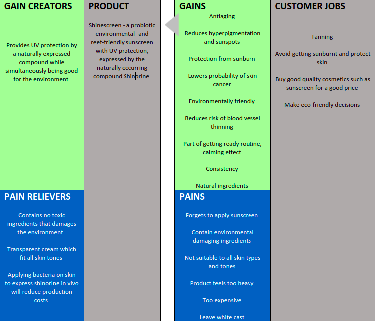

Value Proposition
Shinescreen offers a probiotic sunscreen that is both environmental-friendly and protects the consumer against UV light, which is made possible by shinorine, a naturally occurring compound that absorbs UV-A light.
Our product will be adapted to all skin tones, and we are therefore aiming to develop a transparent formula. In addition, the application of Shinescreen will not leave a white cast on the skin, which has been shown to be unpopular among customers. The use of probiotic bacteria also opens up to the possibility for our sunscreen to prevent acne if the product is further developed in the future.
The product will be accessible and affordable for customers as the genes expressing shinorine will be inserted into probiotic bacteria and then directly applied to the skin, cutting production costs.
Shinescreen is thus a new ground-breaking environmental and inclusive sunscreen that gives full protection against UV-A light and aim to appeal to customers who seek eco-friendly products that reduce ecotoxicity, for example vegans, tourists going to sunny places and people who use sunscreen regularly.
Method
Most of the value proposition was based on last year’s phase 1 project’s unique value proposition, but we wanted to shorten it down and make it easier for the general public to understand. We wanted it to have a more inclusivity and diversity focus, which was why we decided to try to make a transparent formula.
We also wanted to understand the process of coming up with an effective value proposition and hence we used a value proposition canvas to identify key benefits that our sunscreen would give to the customer. The model we chose is shown below and encompasses the idea of pains and gains based on the ideas by Dr Alexander Osterwalder (Thomson, 2013).
Key Terms
Customer jobs refer to the functional, emotional or social tasks that the customer is trying to perform, trying to solve, and needs that are wished to be met. Gains are the benefits that the customer needs and expectations, and Pains are the negative experience, emotions or risks that the customer faces when trying to get the customer job done. Gain creators are the ways in which the product creates gain and how it produces value to the customer. Pain relievers aim to tell how the product alleviate pains. The product is how the product produce gain and relieves pain and how that creates value to the customer (International, n.d).
Application
Applying the proposition canvas to our product meant to come up with ways our sunscreen would relieve pain and create gain to the customer. Gains and pains relate to the benefits and drawbacks that come with performing the customer jobs listed below, when for example applying sunscreen.
We identified key consumers, potential substitutes, main gain creators and pain relievers which would shape our value proposition and work throughout.
Figure 1. Value proposition canvas. Pains and gains from sunscreen and how Shinescreen can relieve these pains and create gain. Information taken from Parrish Healthcare (2020) and St Andrews iGEM(2020).
KEY CUSTOMERS
At first, we were thinking that our main consumer group would be environmental-conscious customers that want to make more environmental-friendly decisions. However, after the interview with Rick Babel, the CEO of Mama Kuleana, who highlighted that the main problem is tourists who travel to for example Hawaii and use sunscreen with ecotoxic ingredients, we decided that another key consumer group is people who seek to go on holiday to places with reefs. In 2019 around 16.1 million foreign tourists visited Indonesia (Wail Akhlas, 2020) and 9.4 million foreign tourists in Australia the same year (Budget Direct, n.d).
Later upon discovery that sunscreen pollution can damage other marine species as well (Donws, 2016) we decided that the key customer group should be people who seek to go on holiday and use sunscreen in general, and not only specify it to tourists who seek to visit places with reefs.
Our main customer groups are therefore tourists, sunscreen users and people who seek environmentally friendly solutions such as vegans. Our focus will mainly be customers in Europe as it is there, we aim to launch our sunscreen first.
Main Substitutes
Potential substitutes would be cheaper environmental-friendly options that provide both UV-A and UV-B protection, such as sunscreens using non-nano zinc oxide.
By using the naturally occurring compound called Shinorine we provide full UVA protection as well as a sunscreen with no toxic ingredients. In addition, our engineered kill switch, which prevents bacteria from escaping to the environment, makes our product is eco-safe. With the use of Shinorine and our designed kill switch, we add value to the customer in addition to sun protection generating a gain creator.
Our sunscreen also works as a pain reliever. Due to the rising awareness of the climate crisis and the prevailing threats to the marine environment, people seek to make environmentally conscious choices. The main pain reliever of our product is therefore its positive impact on the environment when using the product and the good feeling that is created when making an environmentally conscious choice. Our product is also probiotic meaning that it is made from natural ingredients which could further appeal to customers to purchase our product.
References
5 Reasons To Use Sunscreen Every Day (no date) Parrish Healthcare. Available at: https://www.parrishhealthcare.com/news/2020/july/5-reasons-to-use-sunscreen-every-day/ (Accessed: 19 July 2021).
Budget Direct (no date) Australian Tourism Industry 2020 | Travel Research & Statistics, Budget Direct. Available at: https://www.budgetdirect.com.au/travel-insurance/research/tourism-statistics.html (Accessed: 19 July 2021).
Donws (2016) ‘Sunscreen Pollution’, MarineSafe, 18 March. Available at: http://www.marinesafe.org/blog/2016/03/18/sunscreen-pollution/ (Accessed: 19 July 2021).
iGEM St Andrews 2020 (2020) Human Practices, Shinescreen. Available at: https://2020.igem.org/Team:St_Andrews/Human_Practices#Shinescreen%20Case%20Study (Accessed: 19 July 2021).
International, B. (no date) ‘What is the Value Proposition Canvas?’, B2B International. Available at: https://www.b2binternational.com/research/methods/faq/what-is-the-value-proposition-canvas/ (Accessed: 19 July 2021).
Thomson, A. P. (2013) Value Proposition Canvas Template, Peter J Thomson. Available at: https://www.peterjthomson.com/2013/11/value-proposition-canvas/ (Accessed: 19 July 2021).
Wail Akhlas, A. (2020) ‘Indonesia welcomes 16.1m foreign tourists in 2019, coronavirus clouds tourism outlook’, The Jakarta Post, 3 February. Available at: https://www.thejakartapost.com/news/2020/02/03/indonesia-welcomes-16-1m-foreign-tourists-in-2019-coronavirus-clouds-tourism-outlook.html (Accessed: 19 July 2021).